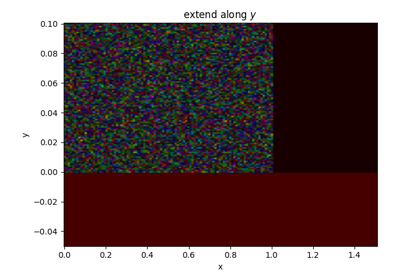

Individual Functions¶
These are not very important – just tests to verify the performance of individual functions.


Extend

sphx_glr_auto_examples_indiv_funcs_test_colormatch.py
show an easy method for matching colors using pyspecdata
These are not very important – just tests to verify the performance of individual functions.
sphx_glr_auto_examples_indiv_funcs_test_colormatch.py

Example Gallery